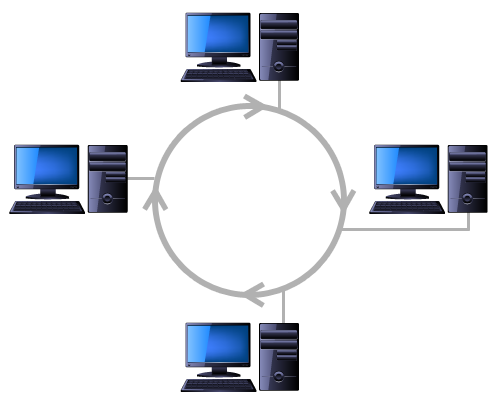
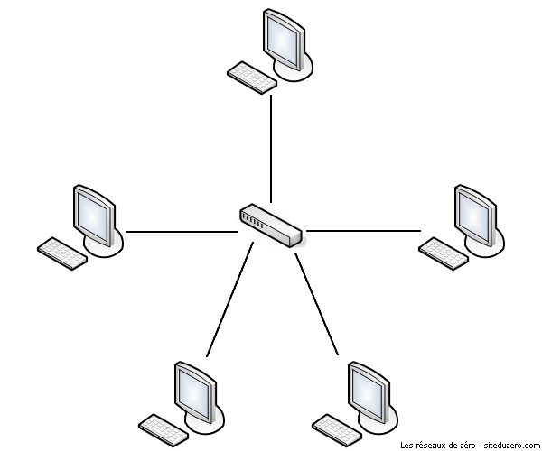
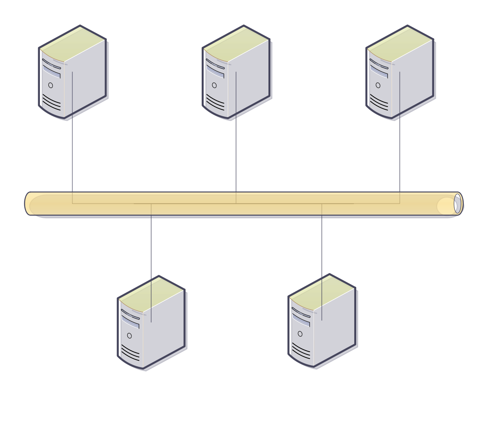
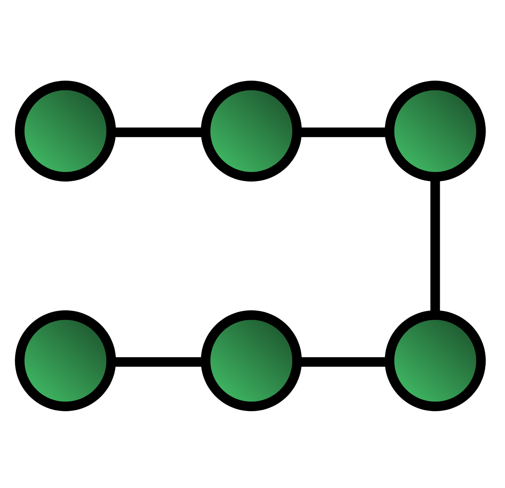
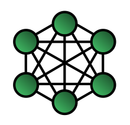
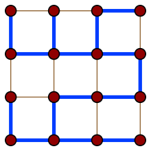
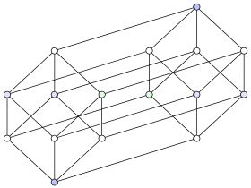
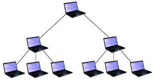

1 – Le réseau en anneau :
Aussi connu sous le nom de Réseau en arbre, il est divisé en niveaux. Le sommet, de haut niveau, est connecté à plusieurs nœuds de niveau inférieur, dans la hiérarchie. Ces nœuds peuvent être eux-mêmes connectés à plusieurs nœuds de niveau inférieur. Le tout dessine alors un arbre, ou une arborescence. Le point faible de ce type de topologie réside dans l'ordinateur "père" de la hiérarchie qui, s'il tombe en panne, interdit alors toute communication entre les deux moitiés du réseau.
2 – Réseau en étoile :
La topologie Réseau en étoile aussi appelée Hub and spoke est la topologie la plus courante actuellement. Omniprésente, elle est aussi très souple en matière de gestion et de dépannage d'un réseau : la panne d'un nœud ne perturbe pas le fonctionnement global du réseau. En revanche, l'équipement central (un concentrateur — hub — et plus souvent sur les réseaux modernes, un commutateur — switch —) qui relie tous les nœuds, constitue un point unique de défaillance : une panne à ce niveau rend le réseau totalement inutilisable. Le réseau Ethernet est un exemple de topologie en étoile. L'inconvénient principal de cette topologie réside dans la longueur des câbles utilisés.
3 – Réseau en bus :
La topologie Réseau en bus (informatique) est représentée par un câblage unique des unités réseaux. Il a également un faible coût de déploiement et la défaillance d'un nœud (ordinateur) ne scinde pas le réseau en deux sous-réseaux. Ces unités sont reliées de façon passive par dérivation électrique ou optique. Les caractéristiques de cette topologie sont les suivantes : Lorsqu'une station est défectueuse et ne transmet plus sur le réseau, elle ne perturbe pas le réseau. Lorsque le support est en panne, c'est l'ensemble du réseau qui ne fonctionne plus. Le signal émis par une station se propage dans un seul sens ou dans les deux sens. Si la transmission est bidirectionnelle : toutes les stations connectées reçoivent les signaux émis sur le bus en même temps (au délai de propagation près).
3 – Réseau linéaire :
Il a pour avantage son faible coût de déploiement, mais la défaillance d'un nœud (ordinateur) peut scinder le réseau en deux sous-réseaux.
4 - Le réseau maillé :
Une topologie maillée correspond à plusieurs liaisons point à point. (Une unité réseau peut avoir (1, N) connexions point à point vers plusieurs autres unités.) Chaque terminal est relié à tous les autres. L'inconvénient est le nombre de liaisons nécessaires qui devient très élevé lorsque le nombre de terminaux l'est : s'il y a N terminaux, le nombre de liaisons nécessaires est 1+2+3 …+ N === > ce qui induit à N*(N-1) /2. Cette topologie se rencontre dans les grands réseaux de distribution (Exemple : Internet). L'information peut parcourir le réseau suivant des itinéraires divers, sous le contrôle de puissants superviseurs de réseau, ou grâce à des méthodes de routage réparties.
5 – Le réseau en grille :
Cette topologie serait en théorie la meilleure qui soit, chaque nœud n étant relié à chaque autre par un lien direct. Mais dans la pratique elle serait aussi la plus chère avec un coût en n²
6 – Le réseau en hypercube :
Dans les réseaux informatiques , les réseaux hypercube sont un type de topologie de réseau utilisé pour connecter plusieurs processeurs avec des modules de mémoire et acheminer avec précision les données . Les réseaux hypercubes se composent de 2 m de nœuds , qui forment les sommets des carrés pour créer une connexion interréseau . Un hypercube est essentiellement un réseau maillé multidimensionnel avec deux nœuds dans chaque dimension. En raison de la similitude, ces topologies sont généralement regroupées dans une famille de topologies de maillage k -ary d- dimensionnelles, où d représente le nombre de dimensions et k le nombre de nœuds dans chaque dimension. Topologie d'interréseau hypercube.
7 - Le réseau hiérarchique/réseau en arbre :
Aussi connu sous le nom de Réseau en arbre, il est divisé en niveaux. Le sommet, de haut niveau, est connecté à plusieurs nœuds de niveau inférieur, dans la hiérarchie. Ces nœuds peuvent être eux-mêmes connectés à plusieurs nœuds de niveau inférieur. Le tout dessine alors un arbre, ou une arborescence. Le point faible de ce type de topologie réside dans l'ordinateur "père" de la hiérarchie qui, s'il tombe en panne, interdit alors toute communication entre les deux moitiés du réseau.
